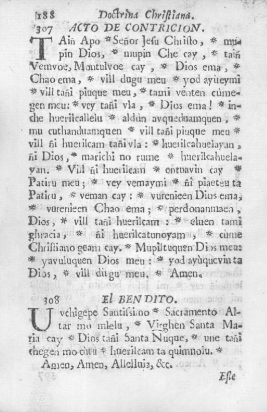
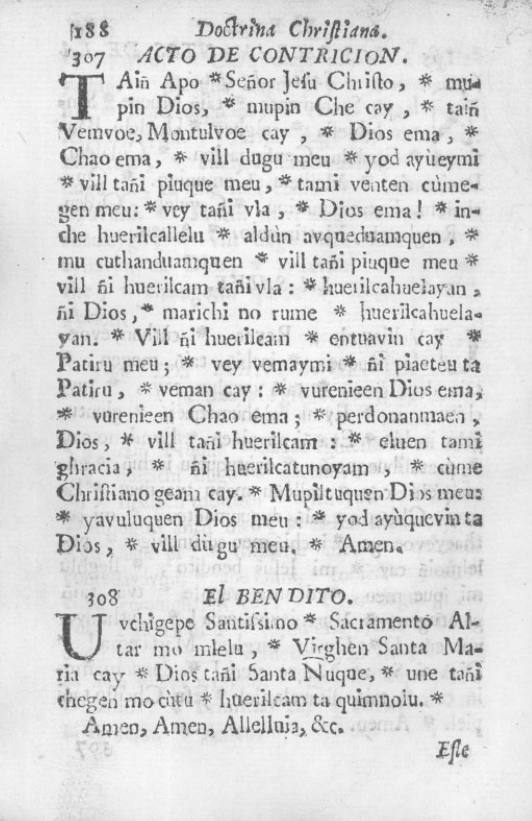
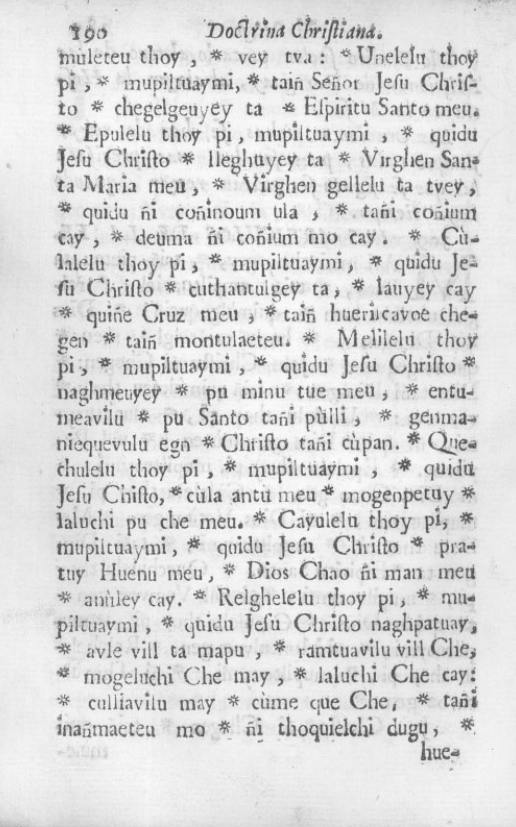
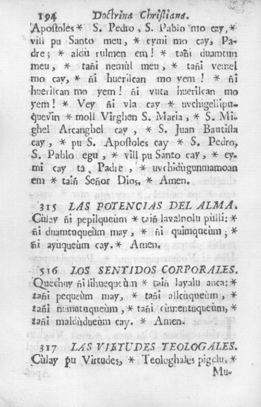
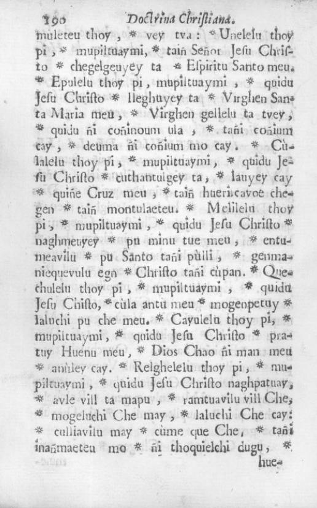
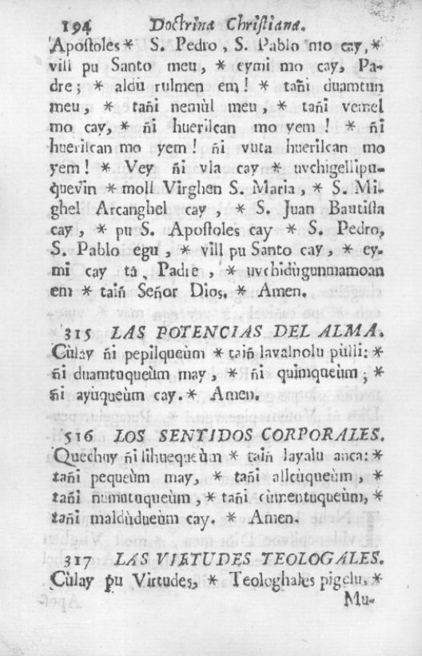
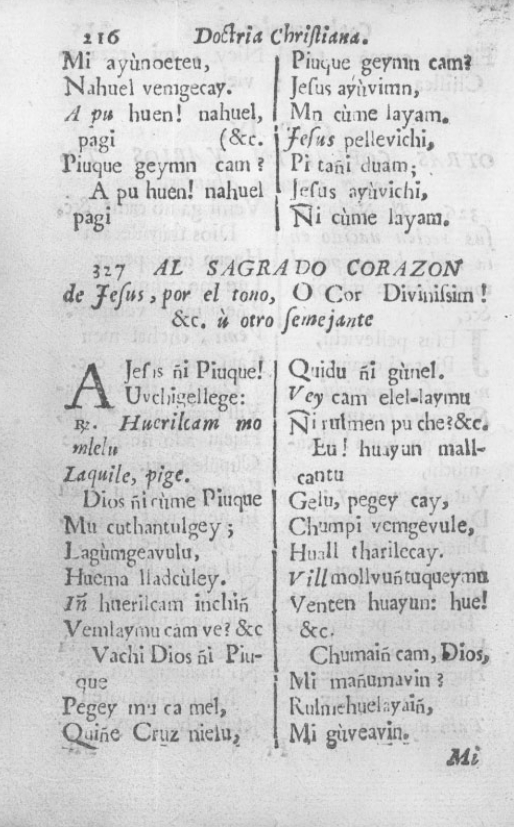
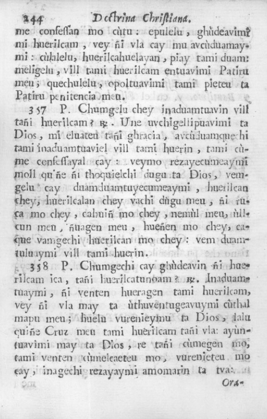
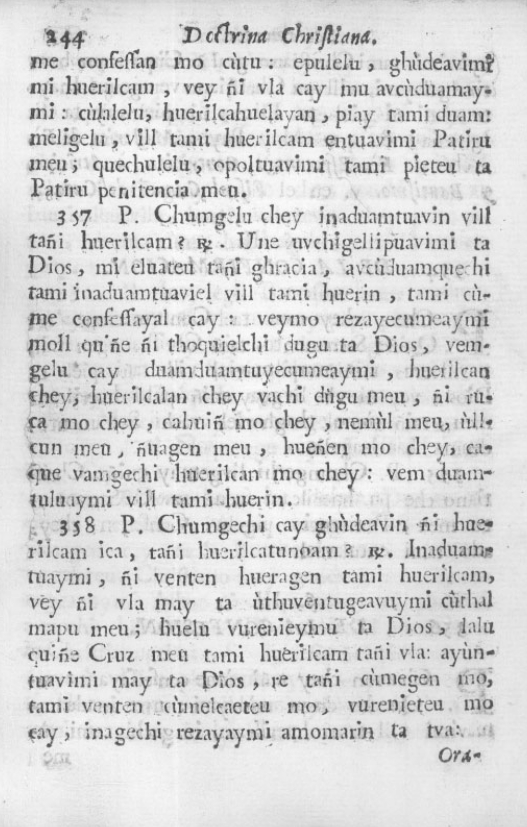

Segunda Parte.
Doctrina Christiana en Chillin Dugu (pp. 183-294)
Calepino Chileno-Hispano en Febrés (1764), con un menú que permite acceder a las entradas.
Doctrina Cristiana en Chilli Dugu
Capítulo 1: El Rezo
 

 



Capítulo 2: El catecismo menor, rosario y coplas


Capítulo 3: El catecismo en quartetas
Capítulo 4: Otras coplas en varios tonos, y a varios asuntos
Capítulo 5: Confesionario por preguntas
Capítulo 6: Doctrina de los santos sacramentos, para que los adultos puedan recibirlos y admistrárseles dignamente
 
